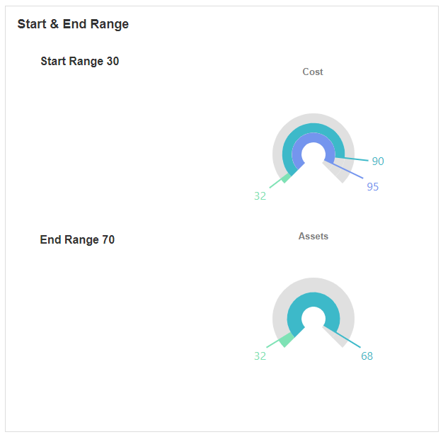

Bar Gauge
This Block allows you to display data in the format of a Bar Gauge. The Bar Gauge includes several circular bars that each indicate a single value. Bar Gauges are useful for displaying and visualizing numeric values within a certain range.
Bar Gauge Properties
Appearance
Common Properties
The visibility property is common to most Blocks;
See the Common Properties article for more details on common appearance properties.
Options that are specific to Bar Gauges include the ability to change the title, font color, bar spacing, and the visibility and format of the label.
Title
This is the text that shows on top of the Bar Gauge.
Font Color
This changes the color of the text above the Bar Gauge.
Bar Spacing
This determines how much space there is between each bar. This can only be seen if there are multiple values on the Bar Gauge.

Label
The visibility of the label can be toggled. To display the data in a different format, the format property can also be changed. Options for this include (but are not limited to) displaying the data as a currency, decimal, fixed point, percent, or time.
Behavior
Common Properties
The disabled property is common to most Blocks;
See the Common Properties article for more details on common behavior properties.
Start Range and End Range
The start and end range define the boundaries of where the values of the Bar Gauge should start and end.

Value
Common Properties
The value property is common to most Blocks;
See the Common Properties article for more details on common value properties.
Multiple values can be entered into the Bar Gauge. When multiple values are visible, multiple bars appear.

Last modified: August 19, 2025